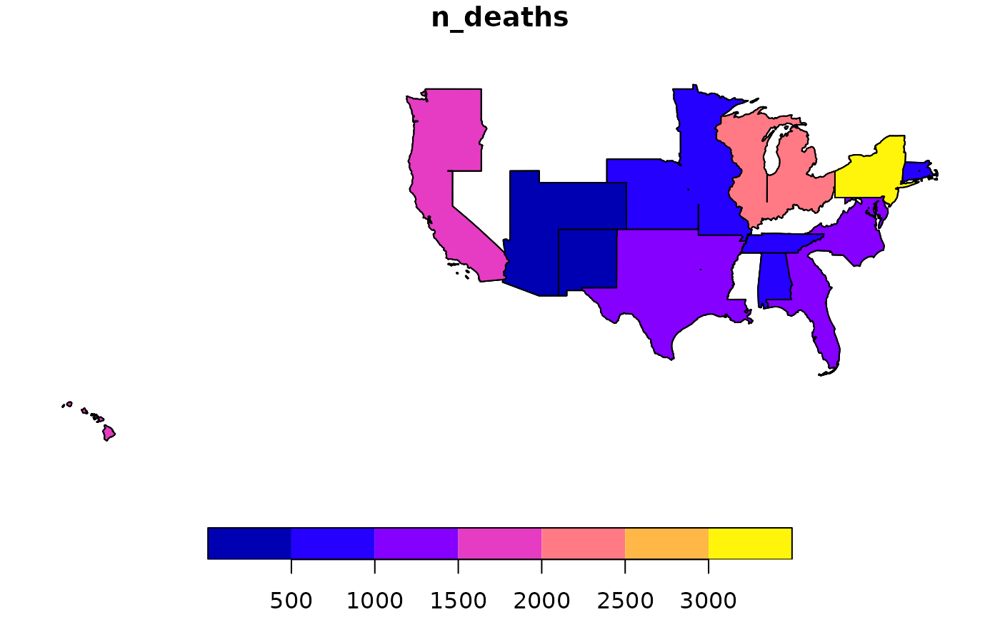

Geographical Queries on Multidimensional Data
Jose Samos (jsamos@ugr.es)
2020-09-15
Source:vignettes/geomultistar.Rmd
geomultistar.RmdIntroduction
The multidimensional data model was defined with the aim of supporting data analysis. In multidimensional systems, data is structured in facts and dimensions1.
The star model is widely accepted, it is recommended for use in widely distributed end-user tools. In it we have a table for facts and a table for each dimension. Dimensions provide factual views for easy querying.
The geographical dimension plays a fundamental role in multidimensional systems. In a multidimensional schema, there can be more than one geographic dimension.
These dimensions allow us to associate places of different levels of detail with the factual data. For example, we can record data at the city level but later we may be interested in studying them grouped at the zone or nation level.
It is very interesting to have the possibility of representing the reports obtained from multidimensional systems, using their geographic dimensions, on a map, or performing spatial analysis on them. Thus, the goal of this package is to enrich multidimensional queries with geographic data. In other words, it is not a question of making spatial queries but of generating a spatial layer with the result of the multidimensional queries and that this generation is done automatically, once the configuration of the geographical dimensions has been made.
The rest of this document is structured as follows: An illustrative example of how the package works is presented. Then, the document ends with conclusions.
An illustrative example
To perform multidimensional queries, the multistar class
was defined in this package. A multistar implements star
schemas: it has a table for each dimension and a table for the facts;
however, it can contain multiple fact tables with some dimensions in
common.
Using the functions defined in the rolap
or starschemar
packages, starting from a flat table implemented by means of a
tibble, we can generate a multistar
object.
If we already have a star schema, geomultistar package
offers functions to generate a multistar object from the
fact and dimension tables in tibble format.
Generate a multistar object
In this case, we are going to suppose that we have tables of facts
and dimensions in tibble format, which we have imported
into R. In particular, we have the tables mrs_fact_age,
mrs_fact_cause, mrs_where,
mrs_when and mrs_who: Two fact tables that
share two of the three dimensions.
Add fact tables
We create an empty object, to which we will add elements. First we have to add a fact table, later we will add dimension tables or other fact tables.
ms <- multistar() |>
add_facts(
fact_name = "mrs_age",
fact_table = mrs_fact_age,
measures = "n_deaths",
nrow_agg = "count"
) For the facts we indicate a name, the table that contains its data and the names of the columns that contain the measures.
We can indicate an aggregation function associated with each measure. This parameter should be defined only if some measure is not additive. In this case it is not necessary.
Finally, we can indicate the name of a field that represents the number of rows grouped in each query: We can indicate the name of an existing column in the table for that purpose, or the name that you want to give to the column to be added if none exists. In this case, the name of a column in the table is assigned.
Next we add another table of facts with characteristics similar to the previous one.
ms <- ms |>
add_facts(
fact_name = "mrs_cause",
fact_table = mrs_fact_cause,
measures = c("pneumonia_and_influenza_deaths", "other_deaths"),
nrow_agg = "nrow_agg"
)In this case, the column that contains the number of grouped rows precisely has the name that is assigned by default.
Add dimension tables
Once we have at least one fact table, we can add dimension tables.
ms <- ms |>
add_dimension(
dimension_name = "where",
dimension_table = mrs_where,
dimension_key = "where_pk",
fact_name = "mrs_age",
fact_key = "where_fk"
)For each dimension we define its name, the table that contains the data, the name of the primary key and, for the table of facts with which we are going to relate it, its name and the name of the corresponding foreign key.
To establish the relationship successfully, it is verified that there
is referential integrity between the tables using the indicated columns.
The columns corresponding to the primary and foreign keys are renamed
and are no longer available for queries. If you want to keep the field
in the dimension, it can be indicated by a parameter, as is shown below
by parameter key_as_data.
ms <- ms |>
add_dimension(
dimension_name = "when",
dimension_table = mrs_when,
dimension_key = "when_pk",
fact_name = "mrs_age",
fact_key = "when_fk",
key_as_data = TRUE
) |>
add_dimension(
dimension_name = "who",
dimension_table = mrs_who,
dimension_key = "who_pk",
fact_name = "mrs_age",
fact_key = "who_fk"
)If a dimension is related to more than one fact table, when it is added, its relationship to only one can be defined. Later, additional relationships can be defined, as we will see next.
Relate dimensions
Once a dimension is included in the multistar object, we
can relate it to other fact tables.
ms <- ms |>
relate_dimension(dimension_name = "where",
fact_name = "mrs_cause",
fact_key = "where_fk") |>
relate_dimension(dimension_name = "when",
fact_name = "mrs_cause",
fact_key = "when_fk")In this case, to specify the dimension we only have to indicate its name.
Additional operations on the multistar object
Through the previous operations, we generate a multistar
object to which we can apply the operations defined for this class. At
this moment we can export it as a flat table, using
multistar_as_flat_table, or define multidimensional
queries, as we will later use dimensional_query.
Define geographic dimensions and attributes
To define the dimensions and geographic attributes of a
multistar object, we must define a
geomultistar specialization from it, which allows to store
this information.
We create a geomultistar object from a
multistar one defining the names of the dimensions that
contain geographic information. In the example only one dimension.
gms <-
geomultistar(ms, geodimension = "where")For each attribute of a geographic dimension that we want to use in queries, we can define a vector geographic data layer with which a relationship can be established using one or more attributes of the dimension.
gms <- gms |>
define_geoattribute(
attribute = "city",
from_layer = usa_cities,
by = c("city" = "city", "state" = "state")
) For the city attribute, a relationship is defined with a
vector geographic data layer in sf format
(usa_cities), using the city and
state attributes2 that have the same name in the layer.
Sometimes there may be problems establishing the correspondence between the geographic attributes and the vector layer: Instances may remain unrelated. To detect these situations, we can query the rows that do not have associated geometry using the following function.
empty_city <- gms |>
get_empty_geoinstances(attribute = "city")The result obtained is shown below.
| city | state | geometry |
|---|---|---|
| Unknown | Unknown | GEOMETRYCOLLECTION EMPTY |
In this case, for the unknown cities, their location has not been determined. There may be several because other geographic data of less granularity may be known.
In the same way, the relationship for county with the
corresponding layer (usa_counties) is defined.
gms <- gms |>
define_geoattribute(
attribute = "county",
from_layer = usa_counties,
by = c("county" = "county", "state" = "state")
) We check if they have all been related.
empty_county <- gms |>
get_empty_geoinstances(attribute = "county")And the result obtained is shown below.
| county | state | geometry |
|---|---|---|
| Unknown | Unknown | GEOMETRYCOLLECTION EMPTY |
It also happens for the same instances. In this case we can see that the associated geometry is of a different type.
In the case of state the definition is carried out by
associating the code to the corresponding one in the layer
(usa_states).
gms <- gms |>
define_geoattribute(
attribute = c("state"),
from_layer = usa_states,
by = c("state" = "state")
) Additionally, for an attribute we can generate its layer from the one
associated with another related attribute of the dimension. This is what
has been done below for division.
gms <- gms |>
define_geoattribute(
attribute = "division",
from_attribute = "state"
) In this case, the vector layer is generated from the data available in the layer under consideration. Sometimes this is precisely what is desired. If not, look for a vector layer at that level of detail.
If no attribute name is indicated, this operation is applied to the rest of the attributes of the dimension that do not have an associated vector layer by any of the methods presented, as shown below.
gms <- gms |>
define_geoattribute(from_attribute = "state")With this we have all the attributes of the dimension with an associated layer, defined at its level of granularity3. On the other hand, we can change the layer of any attribute at any time, independently of the rest.
Define multidimensional queries
Multidimensional queries are defined from a multistar
object. Since we are working with geomultistar, a
specialization of multistar, we can use this object to
define the query.
gdqr <- dimensional_query(gms) |>
select_dimension(name = "where",
attributes = c("division_name", "region_name")) |>
select_dimension(name = "when",
attributes = c("year", "week")) |>
select_fact(name = "mrs_age",
measures = c("n_deaths")) |>
select_fact(
name = "mrs_cause",
measures = c("pneumonia_and_influenza_deaths", "other_deaths")
) |>
filter_dimension(name = "when", week <= "03")The definition functions of this type of queries is based on the selection of facts and dimensions, and the filter of dimensions.
If we use the function run_query(), a multidimensional
query is executed, as shown below.
ft <- gdqr |>
run_query() |>
multistar_as_flat_table()The result of this type of query is a multistar object,
which we can transform into a flat table to display it more easily, as
we do below for the first rows.
| year | week | division_name | region_name | n_deaths | count | mrs_cause_pneumonia_and_influenza_deaths | mrs_cause_other_deaths | mrs_cause_nrow_agg |
|---|---|---|---|---|---|---|---|---|
| 1962 | 01 | East North Central | Midwest | 2258 | 75 | 113 | 2145 | 16 |
| 1962 | 01 | East South Central | South | 526 | 35 | 31 | 495 | 7 |
| 1962 | 01 | Middle Atlantic | Northeast | 3452 | 86 | 173 | 3279 | 20 |
| 1962 | 01 | Mountain | West | 414 | 35 | 34 | 380 | 8 |
| 1962 | 01 | New England | Northeast | 785 | 57 | 56 | 729 | 14 |
| 1962 | 01 | Pacific | West | 1567 | 67 | 56 | 1511 | 14 |
| 1962 | 01 | South Atlantic | South | 1271 | 59 | 58 | 1213 | 12 |
| 1962 | 01 | West North Central | Midwest | 936 | 46 | 47 | 889 | 10 |
| 1962 | 01 | West South Central | South | 1243 | 65 | 66 | 1177 | 13 |
| 1962 | 02 | East North Central | Midwest | 2289 | 76 | 115 | 2174 | 16 |
| 1962 | 02 | East South Central | South | 575 | 33 | 36 | 539 | 7 |
| 1962 | 02 | Middle Atlantic | Northeast | 3426 | 90 | 157 | 3269 | 20 |
Run queries adding geographic information
If instead of executing the standard query, we execute
run_geoquery() function, we automatically obtain a vector
geographic data layer at the finest possible level of detail, depending
on the definition of the query.
vl_sf <- gdqr |>
run_geoquery()The first rows of the result can be seen below in table form.
| year | week | division_name | region_name | n_deaths | count | mrs_cause_pneumonia_and_influenza_deaths | mrs_cause_other_deaths | mrs_cause_nrow_agg | geometry |
|---|---|---|---|---|---|---|---|---|---|
| 1962 | 01 | East North Central | Midwest | 2258 | 75 | 113 | 2145 | 16 | MULTIPOLYGON (((-84.65 45.8… |
| 1962 | 01 | East South Central | South | 526 | 35 | 31 | 495 | 7 | MULTIPOLYGON (((-88.4 30.37… |
| 1962 | 01 | Middle Atlantic | Northeast | 3452 | 86 | 173 | 3279 | 20 | MULTIPOLYGON (((-72.03 41.2… |
| 1962 | 01 | Mountain | West | 414 | 35 | 34 | 380 | 8 | MULTIPOLYGON (((-109.1 41, … |
| 1962 | 01 | New England | Northeast | 785 | 57 | 56 | 729 | 14 | MULTIPOLYGON (((-71.59 41.1… |
| 1962 | 01 | Pacific | West | 1567 | 67 | 56 | 1511 | 14 | MULTIPOLYGON (((-156.1 19.7… |
| 1962 | 01 | South Atlantic | South | 1271 | 59 | 58 | 1213 | 12 | MULTIPOLYGON (((-81.81 24.5… |
| 1962 | 01 | West North Central | Midwest | 936 | 46 | 47 | 889 | 10 | POLYGON ((-102 36.99, -94.6… |
| 1962 | 01 | West South Central | South | 1243 | 65 | 66 | 1177 | 13 | POLYGON ((-106.6 31.87, -10… |
| 1962 | 02 | East North Central | Midwest | 2289 | 76 | 115 | 2174 | 16 | MULTIPOLYGON (((-84.65 45.8… |
| 1962 | 02 | East South Central | South | 575 | 33 | 36 | 539 | 7 | MULTIPOLYGON (((-88.4 30.37… |
| 1962 | 02 | Middle Atlantic | Northeast | 3426 | 90 | 157 | 3269 | 20 | MULTIPOLYGON (((-72.03 41.2… |
The result is a vector geographic data layer that we can save,
perform spatial analysis or queries on it, or we can see it as a map,
using the functions associated with the sf class.

Although we have indicated in the query the attributes
division_name and region_name, as can be seen
in the figure, the result obtained is at the finest granularity level,
in this case at the division_name level.
Only the parts of the divisions made up of states where there is recorded data are shown. If we wanted to show the full extent of each division, we should have explicitly associated a layer at that level.
Get wide tables
In geographic layers, geographic objects usually are not repeated.
The tables are wide: for each object the rest of the attributes are
defined as columns. By means of the parameter wider we can
indicate that we want a result of this type.
vl_sf_w <- gdqr |>
run_geoquery(wider = TRUE)The first rows of the result can be seen below in table form.
| fid | year | division_name | region_name | n_deaths_01 | n_deaths_02 | n_deaths_03 | count_01 | count_02 | count_03 | mrs_cause_pneumonia_and_influenza_deaths_01 | mrs_cause_pneumonia_and_influenza_deaths_02 | mrs_cause_pneumonia_and_influenza_deaths_03 | mrs_cause_other_deaths_01 | mrs_cause_other_deaths_02 | mrs_cause_other_deaths_03 | mrs_cause_nrow_agg_01 | mrs_cause_nrow_agg_02 | mrs_cause_nrow_agg_03 | geometry |
|---|---|---|---|---|---|---|---|---|---|---|---|---|---|---|---|---|---|---|---|
| 1 | 1962 | East North Central | Midwest | 2258 | 2289 | 2314 | 75 | 76 | 75 | 113 | 115 | 125 | 2145 | 2174 | 2189 | 16 | 16 | 16 | MULTIPOLYGON (((-84.65 45.8… |
| 2 | 1962 | East South Central | South | 526 | 575 | 650 | 35 | 33 | 32 | 31 | 36 | 44 | 495 | 539 | 606 | 7 | 7 | 7 | MULTIPOLYGON (((-88.4 30.37… |
| 3 | 1962 | Middle Atlantic | Northeast | 3452 | 3426 | 3413 | 86 | 90 | 91 | 173 | 157 | 160 | 3279 | 3269 | 3253 | 20 | 20 | 20 | MULTIPOLYGON (((-72.03 41.2… |
| 4 | 1962 | Mountain | West | 414 | 411 | 472 | 35 | 34 | 35 | 34 | 21 | 29 | 380 | 390 | 443 | 8 | 8 | 8 | MULTIPOLYGON (((-109.1 41, … |
| 5 | 1962 | New England | Northeast | 785 | 785 | 726 | 57 | 61 | 57 | 56 | 52 | 48 | 729 | 733 | 678 | 14 | 14 | 14 | MULTIPOLYGON (((-71.59 41.1… |
| 6 | 1962 | Pacific | West | 1567 | 1823 | 1637 | 67 | 67 | 66 | 56 | 70 | 76 | 1511 | 1753 | 1561 | 14 | 14 | 14 | MULTIPOLYGON (((-156.1 19.7… |
| 7 | 1962 | South Atlantic | South | 1271 | 1179 | 1319 | 59 | 58 | 57 | 58 | 54 | 62 | 1213 | 1125 | 1257 | 12 | 12 | 12 | MULTIPOLYGON (((-81.81 24.5… |
| 8 | 1962 | West North Central | Midwest | 936 | 1040 | 936 | 46 | 47 | 47 | 47 | 74 | 55 | 889 | 966 | 881 | 10 | 10 | 10 | POLYGON ((-102 36.99, -94.6… |
| 9 | 1962 | West South Central | South | 1243 | 1096 | 1297 | 65 | 63 | 59 | 66 | 67 | 85 | 1177 | 1029 | 1212 | 13 | 13 | 13 | POLYGON ((-106.6 31.87, -10… |
We can see that the attributes that are multivalued for each geographic object have been eliminated from the result table, and new measurement columns have been generated: one for each combination of values of these attributes with the original measurements.
The meaning of the name of the columns of the measurements is part of the result obtained, also in table format, as can be seen below.
| id_variable | measure | week |
|---|---|---|
| n_deaths_01 | n_deaths | 01 |
| n_deaths_02 | n_deaths | 02 |
| n_deaths_03 | n_deaths | 03 |
| count_01 | count | 01 |
| count_02 | count | 02 |
| count_03 | count | 03 |
| mrs_cause_pneumonia_and_influenza_deaths_01 | mrs_cause_pneumonia_and_influenza_deaths | 01 |
| mrs_cause_pneumonia_and_influenza_deaths_02 | mrs_cause_pneumonia_and_influenza_deaths | 02 |
| mrs_cause_pneumonia_and_influenza_deaths_03 | mrs_cause_pneumonia_and_influenza_deaths | 03 |
| mrs_cause_other_deaths_01 | mrs_cause_other_deaths | 01 |
| mrs_cause_other_deaths_02 | mrs_cause_other_deaths | 02 |
| mrs_cause_other_deaths_03 | mrs_cause_other_deaths | 03 |
In this case there was only one variable with a multiplicity greater than one. If there were more variables in this situation, they would be added to this table in the same way.
This data dictionary table and layer structure can be saved in
GeoPackage format using the save_as_geopackage()
function.
save_as_geopackage(vl_sf_w, "division")The GeoPackages thus obtained can be used directly, for example in QGIS.
Conclusions
To generate the multidimensional structure on which to define
queries, we can use the functions of the rolap
package or, if we already have the multidimensional design implemented,
the import functions included in this package.
The geomultistar package allows generating vector
geographic data layers in sf format as a result of
multidimensional queries. To do this, all we need is to associate vector
geographic data layers with some of the attributes of the geographic
dimensions, so that the layers associated with the rest of the
attributes can be obtained automatically. Queries do not present any
additional difficulties due to the fact of returning geographic
data.
The data obtained can be processed with the sf package
to define spatial queries or analysis, be presented in maps or saved as
a file to be used by a GIS (Geographical Information System)
tool.